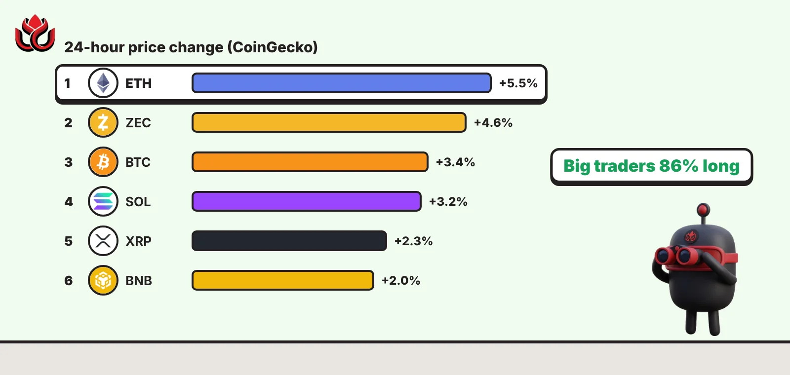
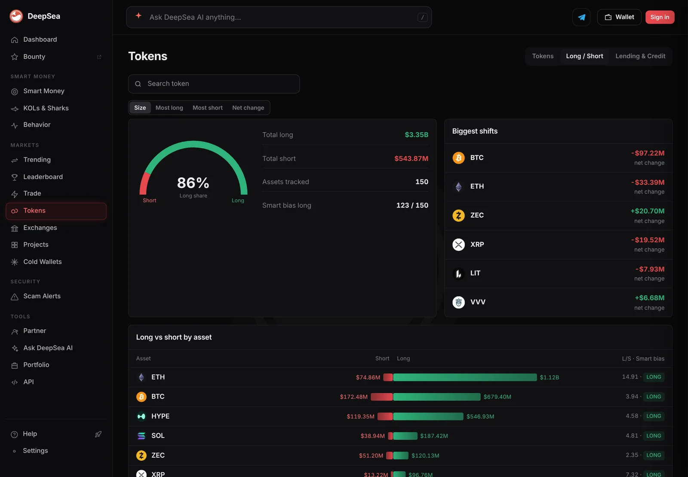
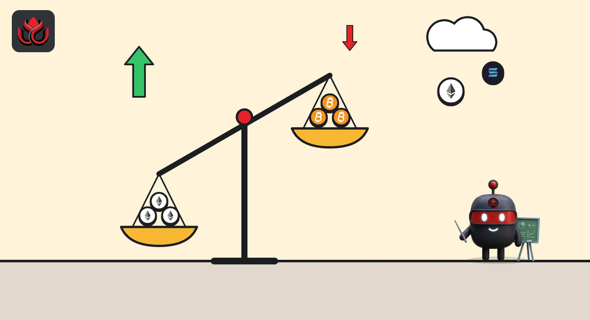

Ether jumped 4.6% in two hours and bitcoin is back above $80,000. Big traders are 86% long
Most of ether's 5.5% daily gain came between 9 and 11 a.m. ET on November 4, CoinGecko's data shows. DeepSea counts $3.35 billion in long bets against $543.87 million in shorts.

Key points
- Ether traded at $2,421.60 at 12:49 a.m. ET on November 5, up 5.5% in 24 hours. Bitcoin was at $80,415, up 3.4%, per CoinGecko.
- Most of the move came in one window: from 9 to 11 a.m. ET on November 4, ether rose from $2,317.30 to $2,424.50 (4.6%) and bitcoin from $78,288 to $80,261.
- DeepSea's perps tracker shows the tracked big traders 86% long, with $1.12 billion of long ether bets against $74.86 million of shorts.
 What DeepSea's data shows
What DeepSea's data shows
DeepSea's Long / Short tracker follows the perpetual futures positions (leveraged contracts with no expiry date) of the trader wallets it tracks across 150 assets. Read at 12:50 a.m. ET on November 5, 2026, it showed an 86% long share: $3.35 billion in long bets (positions that profit if prices rise) against $543.87 million in shorts. DeepSea marked 123 of the 150 assets with a long bias.
Ether is the most one-sided big market on the page. DeepSea lists $1.12 billion long and $74.86 million short on ETH, a ratio of 14.91 to 1. Bitcoin is at $679.40 million long against $172.48 million short (3.94 to 1).
The group's latest change pointed the other way. In DeepSea's "Biggest shifts" panel, the net change since its previous reading was minus $97.22 million for BTC and minus $33.39 million for ETH, while Zcash's ZEC gained the most, plus $20.70 million.

Data: DeepSea (desea.io), checked November 5, 2026, 12:50 a.m. ET.
What happened
Ether, the coin of the Ethereum network, posted the biggest 24-hour gain among the 10 largest cryptocurrencies on CoinGecko when we checked. At 12:49 a.m. ET on November 5, CoinGecko showed it at $2,421.60, up 5.5% in 24 hours, after a 24-hour range of $2,286.44 to $2,442.86.
Bitcoin climbed back above $80,000. CoinGecko had it at $80,415, up 3.4%, with a 24-hour high of $81,004. Solana's SOL rose 3.2% to $95.91, XRP 2.3% to $1.31 and BNB 2.0% to $713.28.
The gains were not spread across the day. CoinGecko's price history shows almost all of ether's rise packed into a two-hour window on Wednesday morning, US time.
Timeline
Ether trades near $2,247 and bitcoin near $76,410, the low point of CoinGecko's two-day chart
Ether at $2,317.30, bitcoin at $78,288
Ether at $2,424.50 (up 4.6% in two hours), bitcoin at $80,261
Ether holds at $2,421.60, bitcoin at $80,415

The numbers
Trading picked up with the price. CoinGecko's rolling 24-hour volume for ether was about $8.13 billion at 7 p.m. ET on November 3. By 7 p.m. ET on November 4 it had more than doubled to about $17.36 billion. At the time we checked it stood at $15.84 billion. Bitcoin's 24-hour volume was $35.82 billion.
Zcash's ZEC also moved up, by 4.6% to $1,314.79, which makes it the second-best performer of the coins in the chart below.
24-hour price change, November 5, 2026, 12:49 a.m. ET
%
Source: CoinGecko market data
A bounce, not a recovery yet
One good day does not erase a bad month. CoinGecko shows ether still down 10.2% over 30 days and about 51% below its record of $4,946.05. Bitcoin is down 5.9% over 30 days and about 36% below its $126,080 peak. Solana is down 20.0% over the same 30 days.
Over seven days the picture is mixed: ether is up 5.1% and bitcoin 0.9%, while SOL is down 3.6% and BNB 4.2%.
What we could not confirm
We found no primary source, such as a company filing, regulator statement or on-chain event, that explains why buying arrived in that two-hour window. Media reports offered several explanations, but LC Insight does not repeat causes we cannot check against primary sources. The price, volume and positioning figures above come from CoinGecko and DeepSea only.
LC Insight analysis
This section is our reading of the facts above, not a statement of fact.
- We think the lopsided positioning matters more than the price jump. When 86% of tracked perps money sits on the long side, a fall can force sellers through liquidations, so the rally rests on crowded bets.
- The drop in net BTC and ETH exposure in DeepSea's data while prices rose looks like traders trimming into strength rather than chasing it. The likely result is that the next leg depends on spot buyers, not leverage.
- Ether outpacing bitcoin for a day is not new in this market. A 30-day loss of 10.2% means the move still sits inside a downtrend until prices hold above the November 4 high.
What's next
- Whether ether holds above $2,424, the level it reached by 11 a.m. ET on November 4
- DeepSea's long share: a drop from 86% would show traders closing longs
- Bitcoin's 24-hour high of $81,004 as the next test
Disclaimer. This article is based on public information and the sources listed below as of the update time shown. It is for information only and is not investment, legal or tax advice. Figures may change as companies and authorities publish new data.
Sources
- CoinGecko, Ethereum (ETH) price and history, checked November 5, 2026, 12:49 a.m. ET
- CoinGecko, Bitcoin (BTC) price and history, checked November 5, 2026, 12:49 a.m. ET
- CoinGecko API, coins markets and market chart endpoints
- DeepSea, Tokens: Long / Short (perpetual futures positioning), checked November 5, 2026, 12:50 a.m. ET